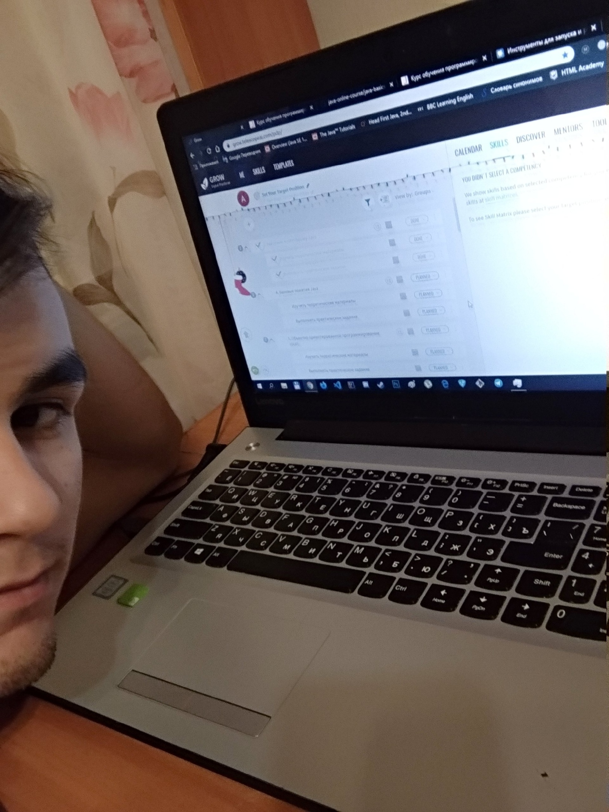

- My name is Anatoly Sochnev
- My contacts:
- Number phone: 79508106886
- Gmail: starkdavk@gmail.com
- Telegram: @willeeWonke
- The purpose of my life, no matter how primitive it may sound, is its happy and interesting conduct. I
have a younger sister and I want to show her what it is like to really live, to visit many countries, to
find out how others live. In order to achieve the implementation of the above, I need capital, on which
I can implement this. At the end of the 2nd year of my college, I realized who I want to be - a
programmer; this gave me an idea of the direction in which it is necessary to move in order to achieve
the goal, and I will do my best to make my plan come true.
- During the period of conscious training I studied HTML, CSS, basics Java and JavaScript, a little
framework React.
- Examples of my code can be found at the links in GitHub:
- Java: https://github.com/willeWonke/java-oop-template
- HTML, CSS and a little JS:
- I was able to gain experience due to the fact that:
- Completed most of the courses on HtmlAcademy.
- Got acquainted with the JavaScript and React by doing a workshop.
- Passing the exam in college typeset html page.
- Was preparing a React website project for college.
- During self-study I:
- Studied courses on HtmlAcademy.
- Watched workshops on youtube.
- Listened to a college programming teacher.
- My english is not very good, but I try to study diligently in the classroom and do self-education at
home.